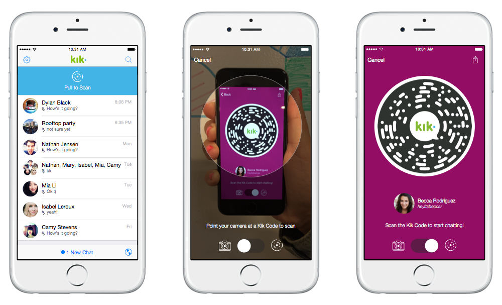
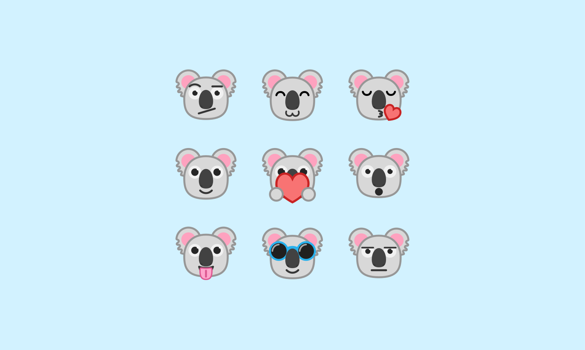
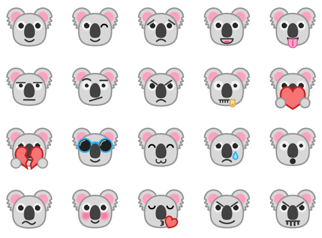
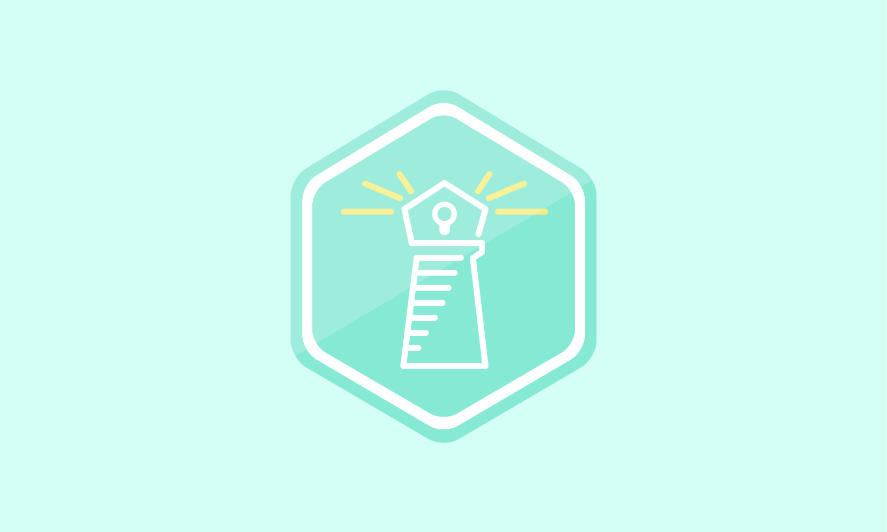
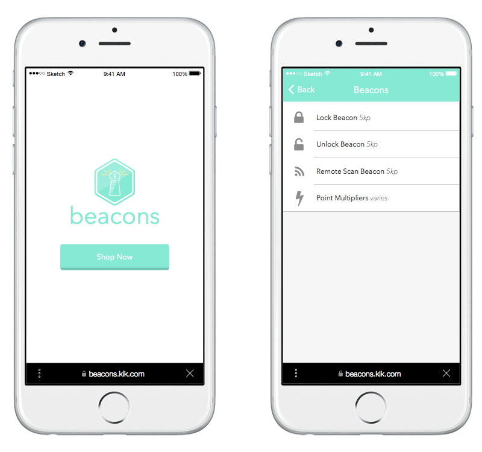
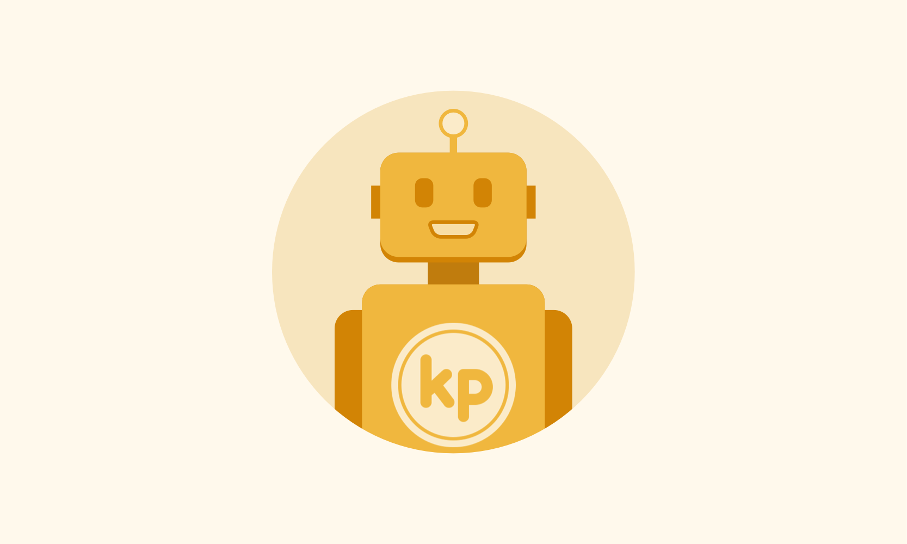
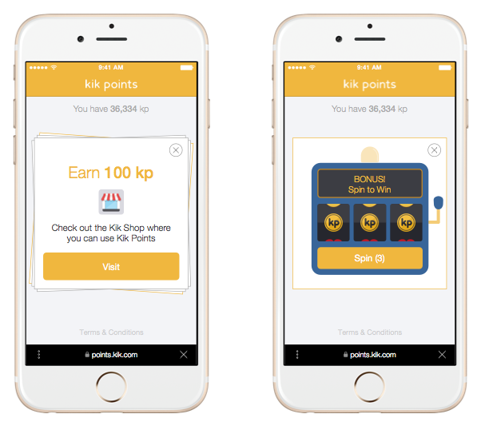

CloudBreakers — Uken Games
Tools Used
- Vector graphics are edited using Adobe Illustrator
- Photographic background edited using Adobe Photoshop, Sketch
- Animatics and animations with Adobe AfterEffects
Core Objective
- Creating a product that provides players with a pleasant and intuitive experience.
- Designing with accordance to budget and timeline constraints.
- Designing systems that are compatible with past software builds, in accordance with game design specifications, and also scalable into future iterations.
- Designing the product with the end user’s satisfaction and needs as the primary motivation.
The Story
I began my work term at Uken Games’ CloudBreakers team at the beginning of 2016. When I first joined the team, the game was nearing its Alpha release at the end of February. A core part of why this was an invaluable experience for me was because I had to opportunity to engage in user research and behavior analysis for the first time in my career, but we will come back on that point later.
One core trait required by the studio is being able to quickly and elegantly deliver both animated and static mocks that illustrate player behavior and interactions with the game. My supervisor was instrumental in ensuring that I was appropriately exposed to different opportunities and design challenges.
Gradually over time I was able to earn the respect and acknowledgement of other members of the product team, and as a result, I was tasked with more challenging designs.
Gradually over time I was able to earn the respect and acknowledgement of other members of the product team, and as a result, I was tasked with more challenging designs.
On a few occasions, the game design and UX design team would come into disagreement with the direction and specification of the implementations of certain features.
One core trait required by the studio is being able to quickly and elegantly deliver both animated and static mocks that illustrate player behavior and interactions with the game. My supervisor was instrumental in ensuring that I was appropriately exposed to different opportunities and design challenges.
Gradually over time I was able to earn the respect and acknowledgement of other members of the product team, and as a result, I was tasked with more challenging designs.
Gradually over time I was able to earn the respect and acknowledgement of other members of the product team, and as a result, I was tasked with more challenging designs.
On a few occasions, the game design and UX design team would come into disagreement with the direction and specification of the implementations of certain features.
Design Challenges
One of the core concepts of UX design requires that the system designed to be as intuitive as possible, with minimum thinking required on the user’s part when navigating through the interface and interactions.
Keeping these core ideas in mind, the designs needed to be simple to use, simple in implementation, potentially scalable and also delivered in a timely fashion due to the pressing timeline.
Keeping these core ideas in mind, the designs needed to be simple to use, simple in implementation, potentially scalable and also delivered in a timely fashion due to the pressing timeline.
User Testing
Blah. Blah. Blah. Blah. Blah. Blah. Blah. Blah. Blah. Blah. Blah. Blah. Blah. Blah. Blah. Blah. Blah. Blah. Blah. Blah. Blah. Blah. Blah. Blah. Blah. Blah. Blah. Blah. Blah. Blah. Blah. Blah. Blah. Blah. Blah. Blah. Blah.
Blah. Blah. Blah. Blah. Blah. Blah. Blah. Blah. Blah. Blah. Blah. Blah. Blah. Blah. Blah. Blah. Blah. Blah. Blah. Blah. Blah. Blah. Blah. Blah. Blah. Blah. Blah. Blah. Blah. Blah. Blah. Blah. Blah. Blah. Blah. Blah. Blah.
Blah. Blah. Blah. Blah. Blah. Blah. Blah. Blah. Blah. Blah. Blah. Blah. Blah. Blah. Blah. Blah. Blah. Blah. Blah. Blah. Blah. Blah. Blah. Blah. Blah. Blah. Blah. Blah. Blah. Blah. Blah. Blah. Blah. Blah. Blah. Blah. Blah.
The Takeaway
Blah. Blah. Blah. Blah. Blah. Blah. Blah. Blah. Blah. Blah. Blah. Blah. Blah. Blah. Blah. Blah. Blah. Blah. Blah. Blah. Blah. Blah. Blah. Blah. Blah. Blah. Blah. Blah. Blah. Blah. Blah. Blah. Blah. Blah. Blah. Blah. Blah.
Blah. Blah. Blah. Blah. Blah. Blah. Blah. Blah. Blah. Blah. Blah. Blah. Blah. Blah. Blah. Blah. Blah. Blah. Blah. Blah. Blah. Blah. Blah. Blah. Blah. Blah. Blah. Blah. Blah. Blah. Blah. Blah. Blah. Blah. Blah. Blah. Blah.
Blah. Blah. Blah. Blah. Blah. Blah. Blah. Blah. Blah. Blah. Blah. Blah. Blah. Blah. Blah. Blah. Blah. Blah. Blah. Blah. Blah. Blah. Blah. Blah. Blah. Blah. Blah. Blah. Blah. Blah. Blah. Blah. Blah. Blah. Blah. Blah. Blah.

KOALAS

I recently designed a set of smileys for the Kik Smiley Shop. Smileys are essentially the Kik equivalent of emojis, however they can only be unlocked to a user if he or she redeems them for Kik Points. In light of National Koala Month, I designed a set of twenty different expressions - check them out below!

BEACONS

Beacons was a project I worked on in Kik's summer term HackWeek. This web-based feature on Kik integrates with Kik codes to create a physical capture the flag game with Kik codes as the means for "capturing the flag". Each "beacon" is hidden in a physical space for a user to find. Once found, users can scan the beacon with their Kik code scanner to take posession of it. The user gets points for every minute they keep posession of the beacon. To make the game more interesting, players in posession of a beacon can spend Kik Points to lock the beacon, get a point multiplier, and obtain other strategic advantages.
For this project, I was in charge of the branding, and interface design of the online web store to buy additional services for the game with Kik Points.
Beacons won the prize for "Best Kik Points Integration", and won the overall best hack prize for summer HackWeek.
For this project, I was in charge of the branding, and interface design of the online web store to buy additional services for the game with Kik Points.
Beacons won the prize for "Best Kik Points Integration", and won the overall best hack prize for summer HackWeek.

KIK POINTS

In September 2014, I independently redesigned their digital rewards program, called Kik Points. Kik Points is an interactive rewards program where users complete daily offers to earn "Kik Points". Once acquired, users can spend his or her Kik Points on custom smileys in the Smiley Shop. Smileys are the equivalent of emojis on Kik, and are offered in a variety of different themes and expressions. For this project, I designed interfaces, animations, illustrations, and got to work with an awesome team of developers to bring my ideas to life.

The goal for this redesign was to create a physical metaphor for the offer flow. With this in mind, the idea of a card stack was introduced. Every day, users would be presented with a stack of offers, which would fly off the screen once completed. When the user reaches the end of the card stack, they arrive at a clock interface counting down until the next offers will be present. The clock interface is embedded in the background of the interface, to make it feel as though it has been below the stack of cards the entire time.
Hello! I’m Javan, an UX & Interaction designer based in Waterloo and Toronto.
I am an UX & Interaction designer based in Toronto. I'm currently studying towards an engineering degree at the University of Waterloo. I am specialized in user experience and interactions, with a focus in user testing and behavior analysis. I'm also proficient at handling web and traditional graphics.
I have a plethora of experiences designing applications for both mobile and web platforms in both enterprise and agile environments. My mission statement is to create interactions and experiences that are immersive, intuitive, and pleasant for the end users.
I have over four years of experience with Adobe Photoshop and Illustrator, and two years of working experience in front-end design and development. I'm familiar with the phases and process of agile software development, having worked closely with developers to implement new features and designs.
I recently finished an internship at Uken Games, a mobile games studio based in Toronto, as a Game UI/UX designer. I’m currently looking for internship or co-op opportunities for the Fall of 2016.
I have a plethora of experiences designing applications for both mobile and web platforms in both enterprise and agile environments. My mission statement is to create interactions and experiences that are immersive, intuitive, and pleasant for the end users.
I have over four years of experience with Adobe Photoshop and Illustrator, and two years of working experience in front-end design and development. I'm familiar with the phases and process of agile software development, having worked closely with developers to implement new features and designs.
I recently finished an internship at Uken Games, a mobile games studio based in Toronto, as a Game UI/UX designer. I’m currently looking for internship or co-op opportunities for the Fall of 2016.
Skills
Interface & Experience Design
User Testing & Research
Frontend Development
Branding
Interaction & Animatics Design
Product Prototyping
Tools
Sketch & Illustrator
Photoshop
AfterEffects
UXPin
InVision
Flinto
Hobbies & Interests
Sprites & Pixel Art
2D Illustrations
Animations
Board Games
Video Games
ASOIAF/GoT Trivia